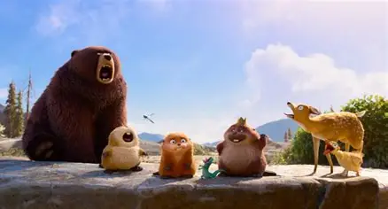

There are many animated movies from 2020 to 2026 that people actually enjoyed. The only problem that stands out is considering which film is your favorite.

This movie from Pixar that was released in March this year. The movie had talking animals and not to mention, a robotic beaver. Think about the animals you cosnider to be your favorite, the ones that appear in the film.
This image belongs to aftercredits.com and is copyrighted under CC BY-NC-SA 2.0. To find the image, go to https://aftercredits.com/2026/03/hoppers-2026/